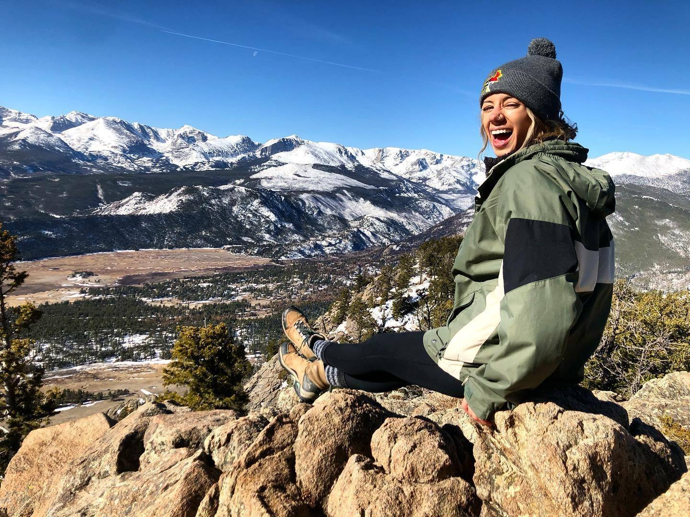

I’m creative, passionate about art, and I have an eye for design. My attention to detail and alignment set me apart from other designers. My designs are consistent and cohesive. I love creating solutions to existing technological problems while focusing on the user experience. Functionality is key! However, functional qualities can involve creative aspects such as typography and color. My current work as a Youth Support Specialist has helped me develop ideal communication & people skills as my the role presents its own set of daily challenges. I thrive in a collaborative environment.
